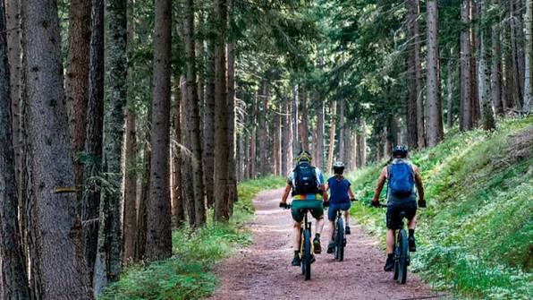

Alquiler de bicicletas
Alquiler de bicicletas por horas o días.
Tarifas de alquilerRueda Libre es un emprendimiento de Medellín que alquila bicicletas y organiza recorridos guiados por la ciudad. Encuéntranos

Somos un equipo apasionado por la movilidad sostenible y el turismo urbano. Nuestra misión es promover el uso de la bicicleta como medio de transporte y recreación en Medellín.

Alquiler de bicicletas por horas o días.
Tarifas de alquilerRecorridos guiados por la ciudad.
Tarifas de recorridosAsesoramiento sobre rutas y seguridad vial.
Nuestros recorridosConoce nuestros más recientes modelos: Cyber, Raptor, Solara y Fulgor.
Alquilar una bicicleta con Rueda Libre es muy sencillo. Solo necesitas registrarte en nuestro sitio web o en nuestras instalaciones y seguir los pasos para reservar la bicicleta que deseas.

Estamos ubicados en el corazón de Medellín, fácilmente accesibles por transporte público o a pie.